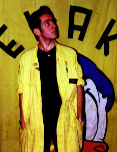
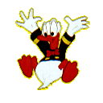

Kalle Anka
Kalle Wanngård
| Kalle
Anka - EKAKs ordförande, det är jag, och det faller sig synnerligen
naturligt, då jag även privat lystrar till detta vackra namn,
fast då med annorlunda efternamn. Min uppgift är att se
till så allt fungerar som det ska, alltså så inte Tjifen
sticker med pluringen, Bror Tvättbjörn dricker upp all Blå
eller andra hemskheter som så lätt skulle kunna inträffa
om man inte höll ett vakande öga över verksamheten. |
| Ankan på
min rygg kommer från en serie ur samligsalbumet "Jag, Kalle Anka"
(på sidan 73, längst ner till höger, för den som är
sjukligt intresserad). Glad, precis som en lycklig och harmonisk anka ska
vara... |
|